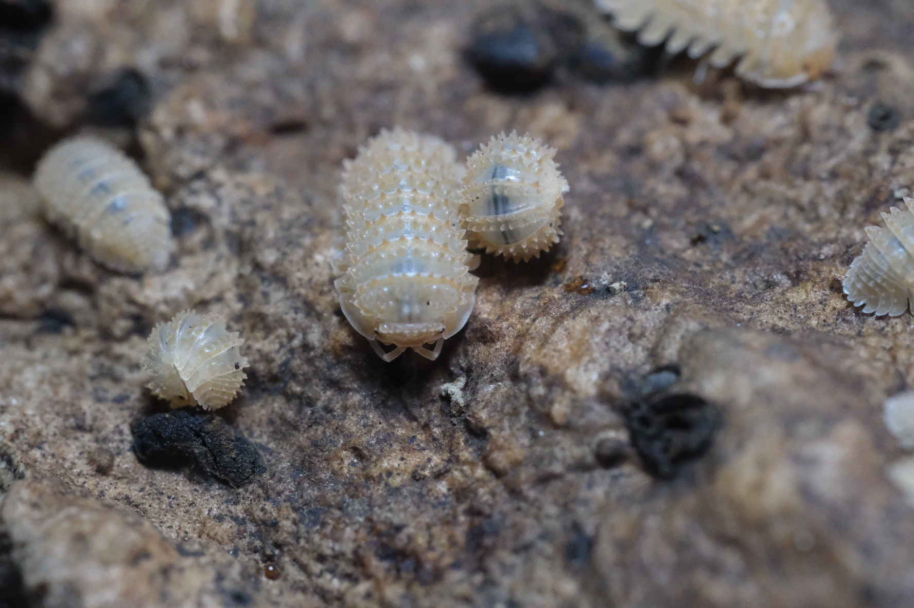

Welcome to WonderPods!
Your ultimate resource for all things isopods!
At WonderPods, we’re passionate about these fascinating creatures and everything that goes into their care. Whether you’re a seasoned isopod enthusiast or just getting started, you’ve come to the right place.
Spotlight Isopods

Porcellio scaber 'Lava'
Vibrant and fiery, these isopods bring a touch of the tropics to your terrarium!

Cubaris sp 'Panda King'
Adorable and distinctive, the Panda King is a fan-favorite among isopod enthusiasts.

Cristarmadillidium muricatum 'Pineapple'
Sweet and spiky, these little ones are as charming as their namesake fruit.
What You'll Find Here:
- Isopods: Dive into the diverse world of these incredible creatures and learn about the different species we love.
- Expos: Stay updated on upcoming events and expos to connect with the isopod community.
- Care: Get expert tips and advice on creating the perfect habitat and maintaining healthy isopods.
- About Us: Learn more about our journey and love for isopods.
- Contact: Reach out with your questions or just say hello!